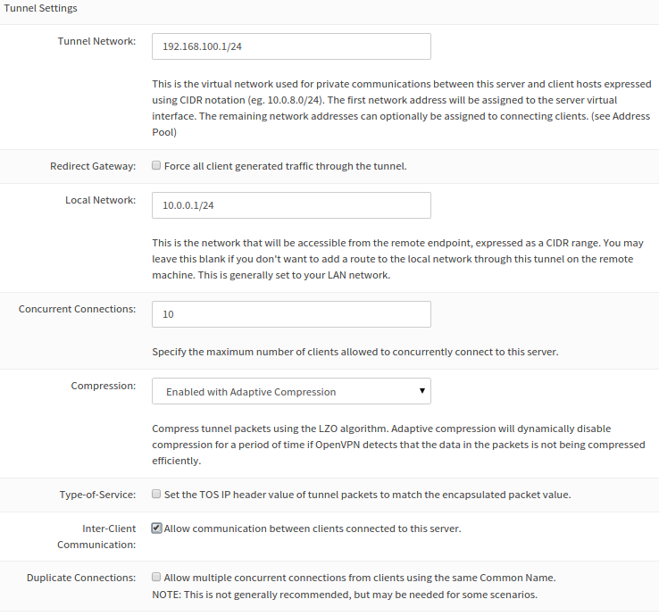
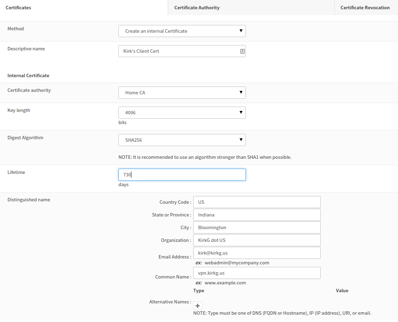

Building an OpenVPN Server with OPNSense
I recently converted my home firewall from pfSense to OPNSense. The reasons for the change are pretty much all outlined in the reasons why OPNSense forked. Those are some pretty solid reasons, in my opinion.
A VPN allows us to connect to our private home network from anywhere on the Internet. This means that if we are in a remote location, and need to retrieve a file from our FreeNAS, or want to play some music from our internal music server, we can use the VPN to make that happen. In essence, a VPN extends our private network by creating a tunnel between our private network and our client(s) out there on the internet.
There are lots of different VPN types, and OPNSense supports several of them: IPSec, L2TP, OpenVPN, and PPTP. We've chosen OpenVPN for our VPN solution because it is open-source and well maintained. There is a large community that offers support and assistance when needed, and it is realtively easy to use once it is all set up. OpenVPN performs well over high-latency networks, and patches vulnerabilities quickly.
The good folks at OPNSense have created a wizard to help us with the set up of our VPN. In the OPNSense Web UI, go to VPN -> OpenVPN. Click on the Wizards tab.
The wizard starts as soon as you click on the tab. For this example, we'll be leaving the Type of Server set to Local User Access. This means that each user that wants to connect to the VPN will need to have an account in OPNSense. For a large scale VPN deployment, this is probably not a practical option. For a small home VPN, this is certainly managable.
Creating a Certificate Authority
When you click Next, you'll be presented with the Remote Access Server set up wizard. The first step to setting up the remote access server is creating a Certificate Authority. In the Descriptive name field, but something that indicates that this is your local CA, e.g. "Home CA".
The default key length is 2048 bits. This is a good default option. Selecting a larger bit length will increase the security of the key, but will also add to processing time. It is recommended that you not set the key length to less than 2048 bits.
The lifetime of the CA is an important value. It defaults to one year, which means that any certificates that are signed by thiss CA will become invalid after one year. This is probably not what you want. In this example, we'll be setting this to 3650, which is approximately 10 years. As long as your protect your keys appropriately, this should be perfectly fine.
The next few fields are about your organization. For all of these fields, you can use whatever values you want. For home use, fake values are certainly fine. If you are setting up a VPN for your business, you will probably want to use values that accurately reflect your organization.
Creating a server certificate
When you click Save for the CA, you'll immediately be asked to create a server certificate. Once again, the descriptive name should be set to something that indicates what the cert will be used for. For example, "Home VPN Server".
The same caveats about the key length and lifetime apply above. These values do not need to be the same as for the CA. It is a good practice to regenerate these certificates periodically, so leaving the default 1 year in this case makes some sense. If you want to go with a longer lifetime, it might make sense to set the server certificate to expire a bit before the CA.
The rest of the fields should be filled in with the values that you enetered when you created the CA. It is perfectly fine to leave these values intact.
Configuring the server
After you create the server certificate, you'll be presented with server options. In the general section, you'llprobably want to leave everything set to WAN UDP 1194. You should enter a description that indicates what this OpenVPN server will be used for, for exaple "Remote Access to Home Network".
Crypto Settings

The default cryptographic settings displayed above are adequate. If your OPNSense server is adequately powerful, you can increase the DH Parameters length, and increase the Encyption Algorithm. Change the Auth Digest Algorithm to anything other than SHA1 is not recommended unless you know what you are doing.
Tunnel Setings

Scrolling down the page futher will reveal the tunnel settings. In order to complete this screen, you'll need to know a little bit about your network and CIDR Notation.
In the Tunnel Network, you'll need to add a subnet for the clients to use. This subnet should be different from any of your internal subnets. In the example above, we've used 192.168.100.0/24. We've defined the Local Network as 10.0.0.0/24. With this configuration, OPNSense will take care of routing the packets between the 2 different subnets.
If you opt to check the "Redirect Gateway" box, then all of the client traffic, regardless of destination, will be routed via the VPN. If you wish to obscure all of your traffic behind your home network, then you'll want to check this box. It also means that if you are in a hotel, connected to your VPN and watching Netflix, then Netflix will think that you are watching from home. It also means that the same traffic will have to be routed more than normal, which may affect the quality.
By default the OpenVPN server will allow an unlimited number of connections to your server. Setting this to a reasonable value is recommended, even if just for a sanity check.
Be default OpenVPN will not attempt to compress the traffic between your client and your server. If your server is not terribly powerful, leaving the traffic unencrypted is probably the way to go. If you do turn on compression, consider using the adaptive compression. This will allow OpenVPN to disable the compression if it finds that it is unable to compress your traffic efficiently.
If you do not want your clients to be able to communicate with each other, then you should uncheck the box next to "Allow communication between clients connected to this server".
Client Settings

The last section deals with how your client will interact with your network once they have connected.
By default the Dynamic IP setting is enabled. This will allow an already connected client to change it's IP adress without having to reconnect.
If you specify a Default DNS Domain, then your clients will receive this value as their DNS suffix. This can be handy if your clients want to look up your internal hostnames without using an FQDN. For example, this would allow a client to browse to "http://freenas" rather than having to type out "http://freenas.domain.local". If you don't need this sort of thing, you should consider leaving this value empty. It may save you from some DNS oddities down the road.
Hand in hand with this is the DNS Server values. If you specify values in here, then these will be added to your clients DNS search list. If you run an internal DNS server, then you should put a value in here. If you are a nerd (like me), then you can leave this empty, but it will mean that you will need to use IP addresses to navigate your home network.
If you run an internal NTP server, you can also push this out to your clients with the NTP Server settings.
The final options are about NetBIOS. If you are a Windows user, then these settings may apply to you. For our purposes, we are going to leave them all empty.
Firewall rules

With the server all configured, the last step is to open up the firewall to allow the connections. The first checkbox allows the traffic from the clients to connect to the server. Without this box checked, your server will not be listening on your public IP, and your clients won't be able to connect.
The second checkbox allows your clients to get around your network. If you do not want your clients to have unfettered access to your internal network, then you will want to not check this box, and define the rules on your own. Checking the box is recommended unless you know what you are doing.
Finishing the server configuration
When you click Next on the firewall rules screen, you will be told that you are finished. It will instruct you to go to a place to enable the OpenVPN client exporter. This message is a legacy message, and is not required. We'll proceed directly to the client creation pieces.
Client Creation
As of the date of this publication, there is not a wizard for setting up a client, so we'll have to do it manually. Don't fret, it isn't terribly difficult.
Add a user
Browse to System -> User Manager and click the + sign to add a new user. This should be the user that you will be using to authenticate to the VPN.
Adding a user Cert.
Ideally each user that connects to your VPN will have it's own cert. To that end, we need to create a new certificate.
Inside the OPNSense web configurator, go to System -> Certificates. In the Certificates tab, press the button to add or import a certificate.

We've covered most of these settings previously, so we need'nt rehash all of the settings. I've changed a couple of the defaults. You may not want to.
Once the cert is created, we need to associate with the user in question. Go back to the User Manager, and edit the user that you've recently created. Near the bottom of the edit screen, there is a "User Certificates" section. Click the + sign in there. Change the method to "Choose an existing certificate" and select the certificate that you just created.
Exporting the OpenVPN config
Now that you've associated the certificate with a user, go to VPN -> OpenVPN. Click on the Client Export tab. Leave all of the defaults and scroll down to the bottom of the page. If you look closely, you'll see a section called "Client Install Packages". The UI in this version isn't great, but I'm sure that they will make it better.

In the image above, you'll see various type of exports. Choose the type of export based on what client you are using. I'm a command line Linux user, so I use the Archive option. The archive downloader is a zip file with the .ovpn config file, and all of the certs the client will need.
At this point you should have a functioning OpenVPN server, and client config that you can export and install in your client of choice. Hopefully you found this tutorial to be helpful.
Comments
Comments powered by Disqus